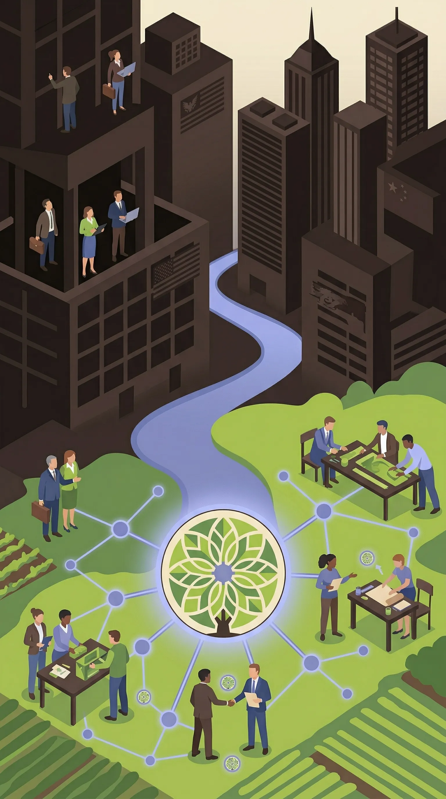
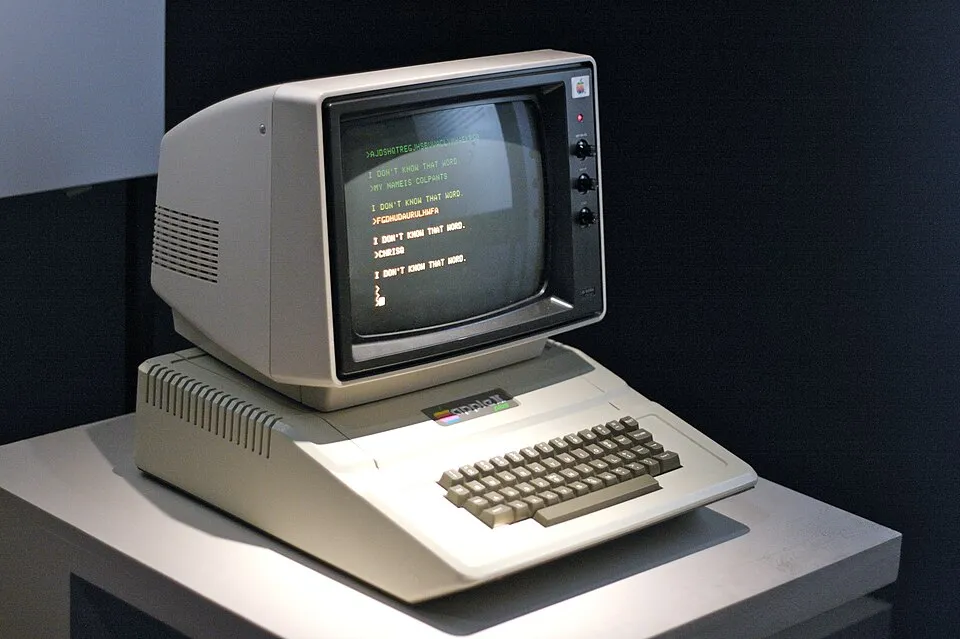
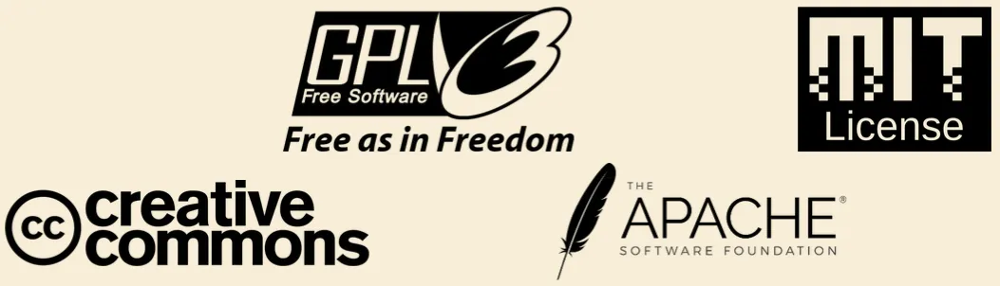
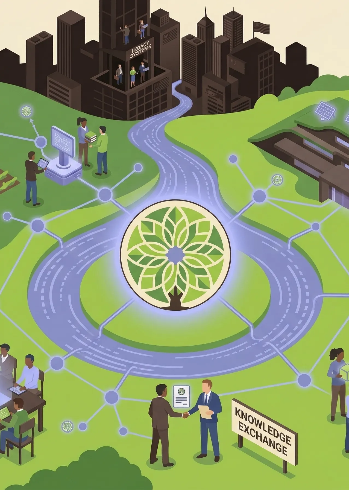

Migrate to the
DIGITAL COMMONS
A data-driven playbook for European governments and businesses looking to reduce dependency on proprietary software and invest in shared open-source infrastructure.

AN INTRODUCTION
to the Internet
The internet was built on shared foundations. For instance open protocols, collaborative software, and freely available knowledge are crucial factors of what made the digital world what it is today. Yet, the companies that benefit most from these shared resources are often the ones contributing least to them.
Meanwhile, a handful of large American and Chinese corporations have come to dominate the capitalist digital economy, leaving European governments and businesses increasingly dependent on foreign, closed-source infrastructure. Digital commons are the alternative.

What are the
COMMONS?
Commons are social institutions for governing the (re)production of resources. Digital commons are a subset of the commons, where resources are created, shared, or managed collectively online, without being owned by anyone. For organisations digital commons are an opportunity to enrich shared digital infrastructure that benefits society instead of a few. Digital commons are practical and proven models for building a stronger, more autonomous European digital economy. You probably are already using the digital commons, Wikipedia, Python, Android, Wordpress and Firefox, so the switch to a more open digital future is within reach.

What are the
BENEFITS?
Beyond economic and political benefits, digital commons offer an important ecological perspective. By shifting away from constant proprietary development, where every company rebuilds the same tools independently, shared infrastructure reduces redundancy and the environmental footprint of the digital economy. Rather than pursuing endless growth through privately owned digital assets, the commons model encourages sustainable management of shared resources, where what already exists is maintained, improved, and reused collectively. More and more European SMEs and policymakers are recognising this, seeing contribution not just as a technical choice but as a signal of values: transparency, collaboration, and long-term thinking. This philosophy extends naturally to a broader vision of a global knowledge ecosystem, in which information, tools, and expertise are treated as common goods to be preserved and grown for the benefit of all, rather than extracted for the profit of a few.

What are you trying to
SELL ME?
We are not selling anything. This playbook is to help you understand the commons model and act on it. Whether you are a policymaker looking for evidence-based arguments for commons investment, or a business trying to understand your relationship with open-source software, you will find tools, data, and guidance here to support your decisions. Our mission is simple: to make the case for the digital commons, and to give you everything you need to be part of building them.